lululemon
Dancewear Growth Strategy
Integrated Marketing Strategy Project
Developed a growth strategy for lululemon’s expansion into dancewear in China, combining market research, consumer segmentation, competitive positioning, and go-to-market planning.
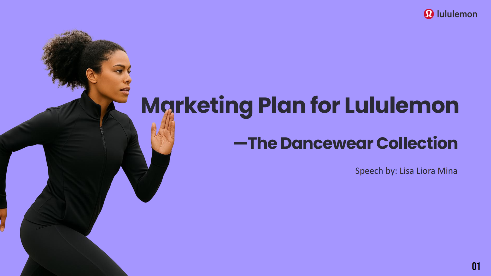
Project Overview
Role
Marketing Strategy & Consumer Research
Focus
Market Opportunity Analysis
Consumer Research
Competitive Positioning
Segmentation & Targeting
Go-to-Market Strategy
Deliverables
Market & Consumer Insights
Positioning Strategy
Target Persona
Product Segmentation
Integrated Campaign Plan
03.1 Market Opportunity & Consumer Insight
Identifying a new growth opportunity at the intersection of performance, lifestyle, and dance culture in China.
Market Opportunity
Identified dancewear as a fast-growing category in China, with growth outpacing the global market and no clear category leader.
Brand Challenge
Lululemon retains strong brand equity, but slowing momentum and increasing value alternatives create pressure to find the next meaningful growth space.
Consumer Insight
Research suggested that women increasingly seek apparel that balances performance, comfort, self-expression, and everyday versatility.
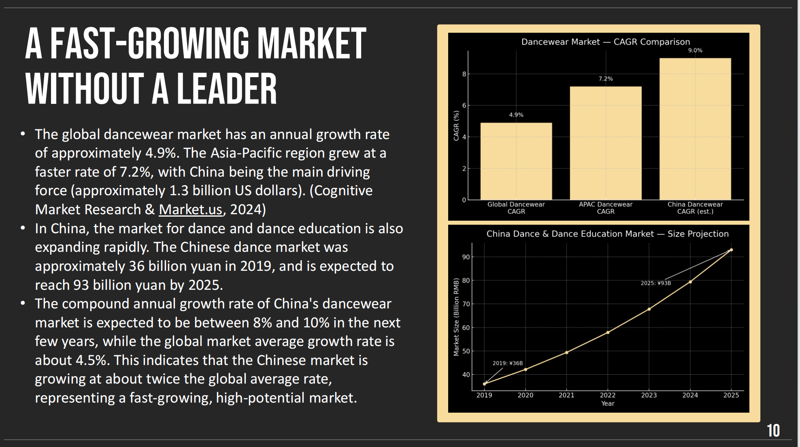
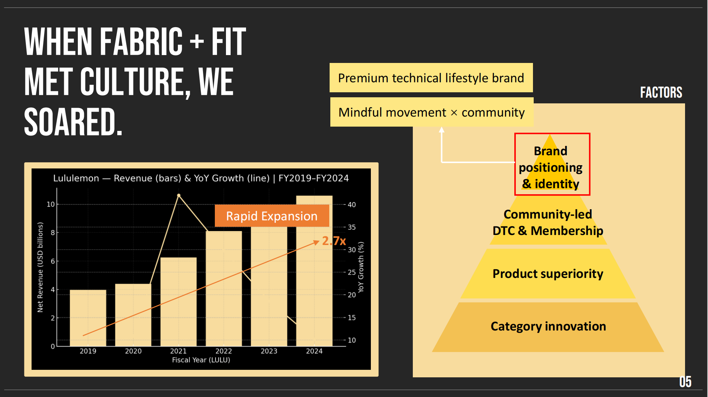
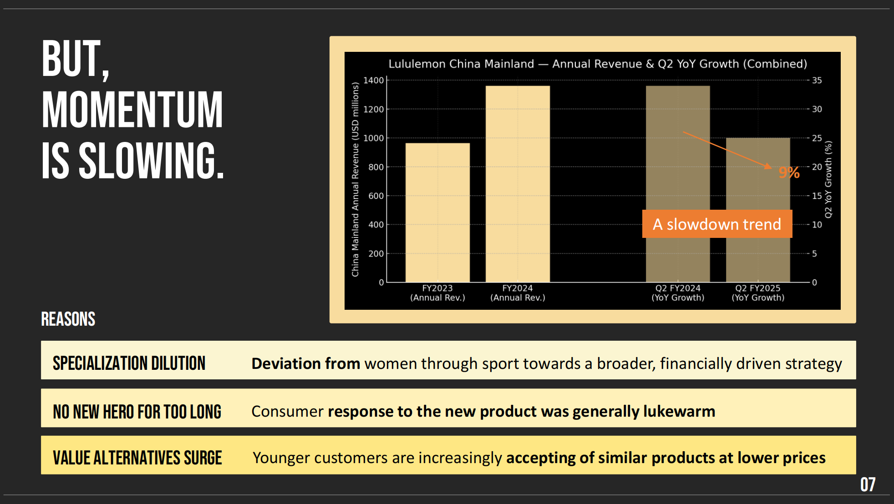
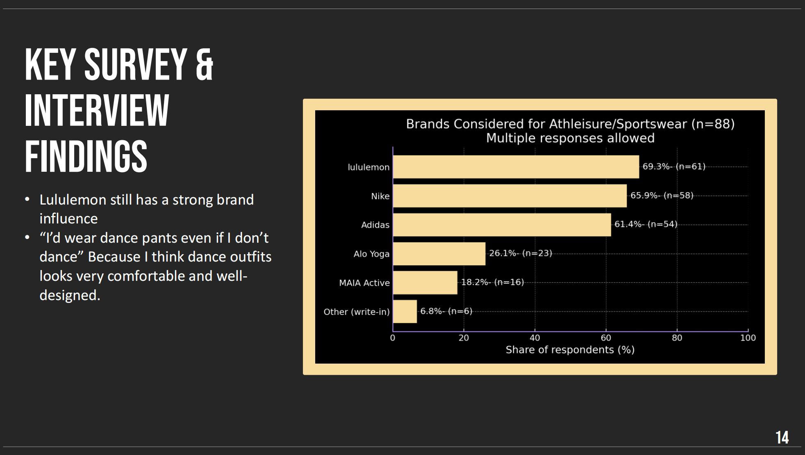
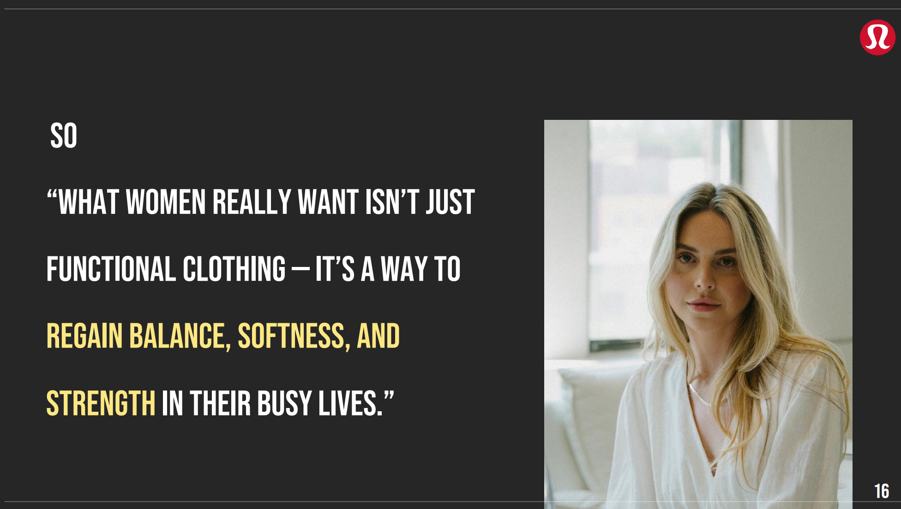
03.2 Competitive Positioning & Target Consumer
Defining a differentiated position and priority audience by combining competitive analysis with consumer segmentation.
Competitive White Space
Mapped major sportswear, lifestyle, and emerging dancewear brands to identify an underserved premium space combining performance and aesthetics.
Differentiated Advantage
Found that lululemon could uniquely connect technical performance, emotional appeal, aesthetics, and multi-scene versatility.
Priority Audience
Prioritized urban “After-work Decompressors” whose work-to-studio lifestyles offered both strong brand fit and attractive commercial potential.
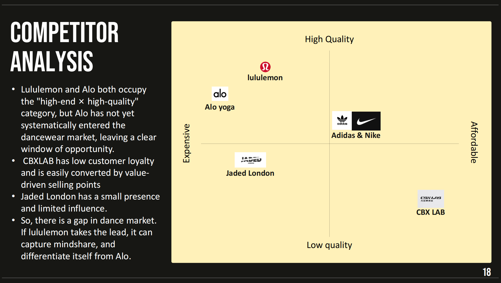
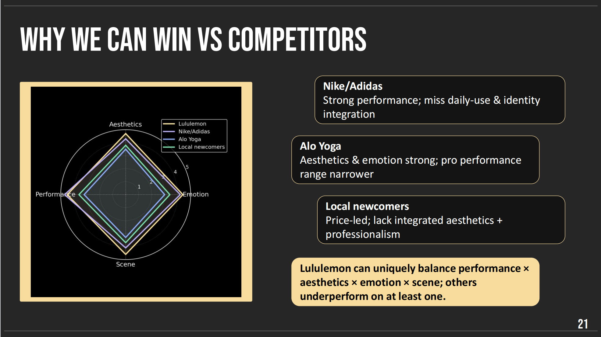
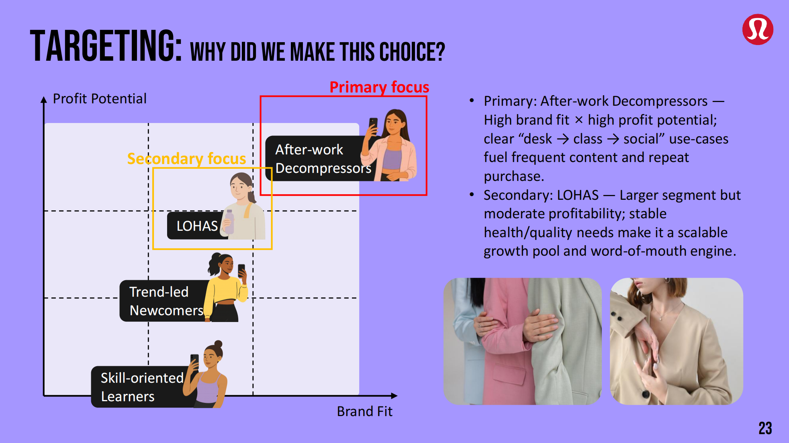
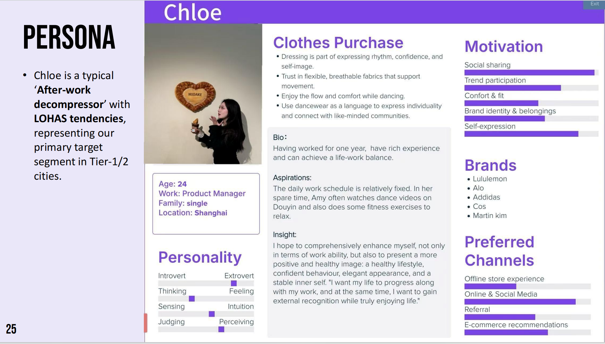
03.3 Product & Go-to-Market Strategy
Translating consumer insight into a differentiated dancewear proposition and integrated launch strategy.
Product Strategy
Developed a segmented product architecture spanning evergreen dance essentials, occasion-driven versatility, and limited self-expression capsules.
Positioning Idea
Built the proposition around an “After-work Reset” use case, helping women move seamlessly from desk to studio to social occasions.
Integrated Activation
Designed a full-funnel communication strategy combining creator storytelling, styling content, trial experiences, community events, and UGC.
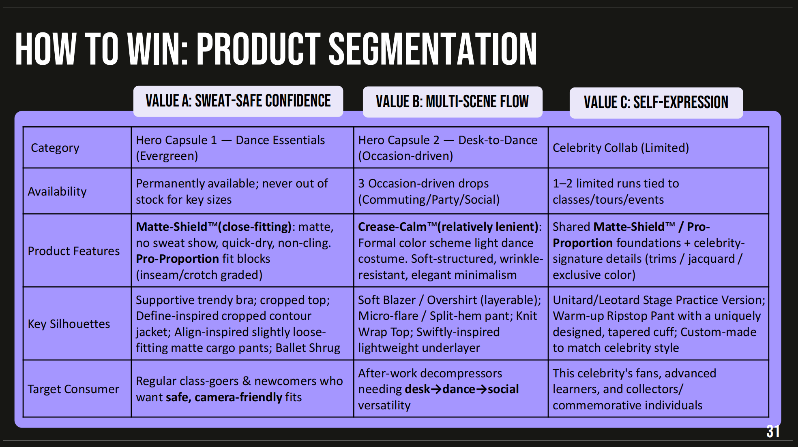
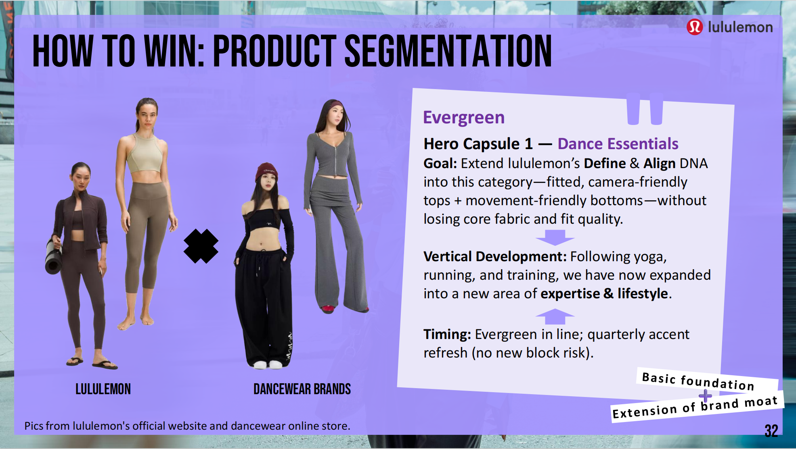
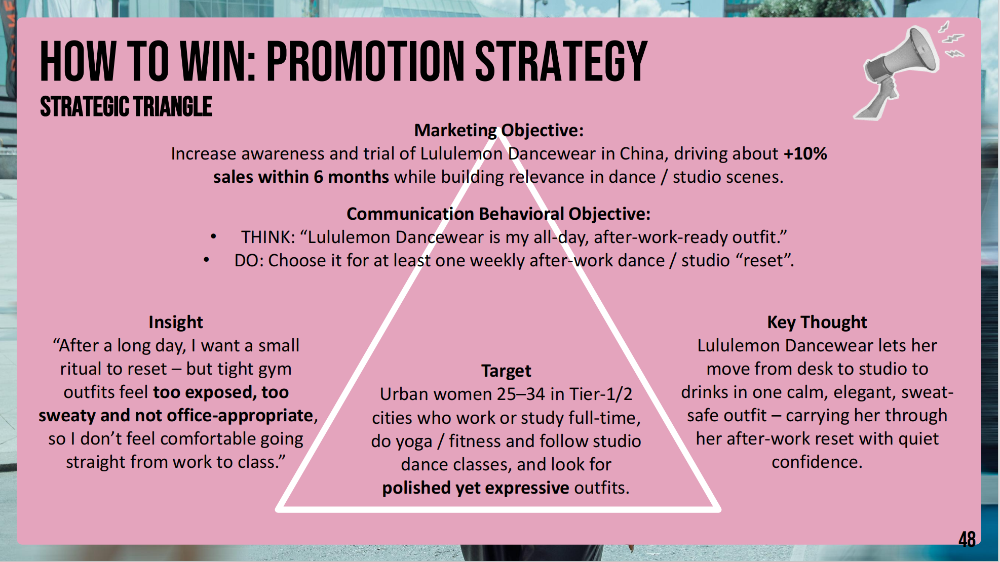
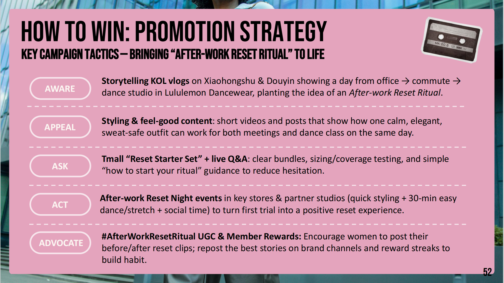